I study mechanical engineering at the University of Michigan. I design machines, wire and program them, and then measure whether they did the job.
Class of 2029, Ann Arbor. Looking for an engineering internship.
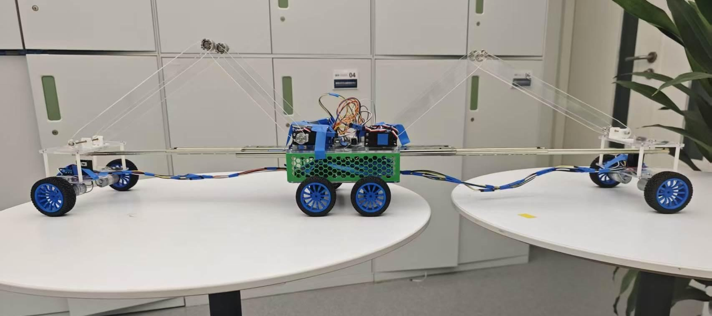
Asked for: 200 mm gap in 2 min Tested: 400 mm in about 10 s
Four servo-driven acrylic linkages fold flat to push the end modules outward.
Steel drawer slides carry the span while the far wheels are in the air.
Eight DC gear motors, one per wheel. All eight drive once the far wheels land.
Two Arduinos. One runs the arm sequence, the other drives the motors when told to go.
3D-printed honeycomb side walls keep the centre body light.
The gap-crossing vehicle my team built in Shanghai in summer 2026, mid-crossing. I was responsible for the electronics and shared the mechanical design. Read the project
Projects, by the kind of work
Pick the row closest to the role you are hiring for.
ME 2500J, design and manufacturing course, Shanghai
Team
Four students
My part
Electronics, and a share of the mechanical design
Built with
SolidWorks, laser-cut acrylic, PLA printing, two Arduinos, L298N motor drivers
Gap-crossing vehicle
A toy-scale vehicle that stretches itself across a gap, then drives over. The brief asked for 200 mm in two minutes. Ours crossed 400 mm in about 10 seconds and came in under budget.
Required against measured
Requirement
Asked for
Our prototype
Gap crossed
200 mm
up to 400 mm, unloaded
Time to cross
under 2 minutes
about 10 seconds
Cost
under 1,000 RMB
about 620 RMB
Control
remote or autonomous
autonomous
Carrying a load
not specified
Very little. See what went wrong.
Six seconds of the prototype reaching across two lab tables.
The brief
A mock client, a toy company, wanted a vehicle no larger than 500 × 300 × 300 mm that could get itself across a 200 mm gap in under two minutes, for less than 1,000 RMB. Four of us had the summer term to design, build and demonstrate it.
How it works
We scored four concepts in a weighted Pugh matrix: a telescoping lead-screw chassis, shifting the weight, laying down a bridge, and servo-driven extending arms. The arms won. Four servos fold acrylic linkages flat, which pushes the front and rear wheel modules outward on steel drawer slides. When the far wheels land on the other side, all eight wheels drive and the body follows.
What I did
I was responsible for the electronics. Eight DC gear motors run through four L298N drivers. The four servos sit on their own regulated rail, stepped down from the 12 V battery. One Arduino runs the arm sequence and sends a single go or stop character over serial. The second Arduino only drives motors.
I also shared the mechanical design with the rest of the team, in SolidWorks.
What went wrong
With weight added, the extended front wheels sagged. The drawer slides act as a cantilever, and our bending estimate had already shown the tip drooping further as load went up. The vehicle crossed empty but could carry very little. Stiffer rails or a shorter reach is the first change I would make.
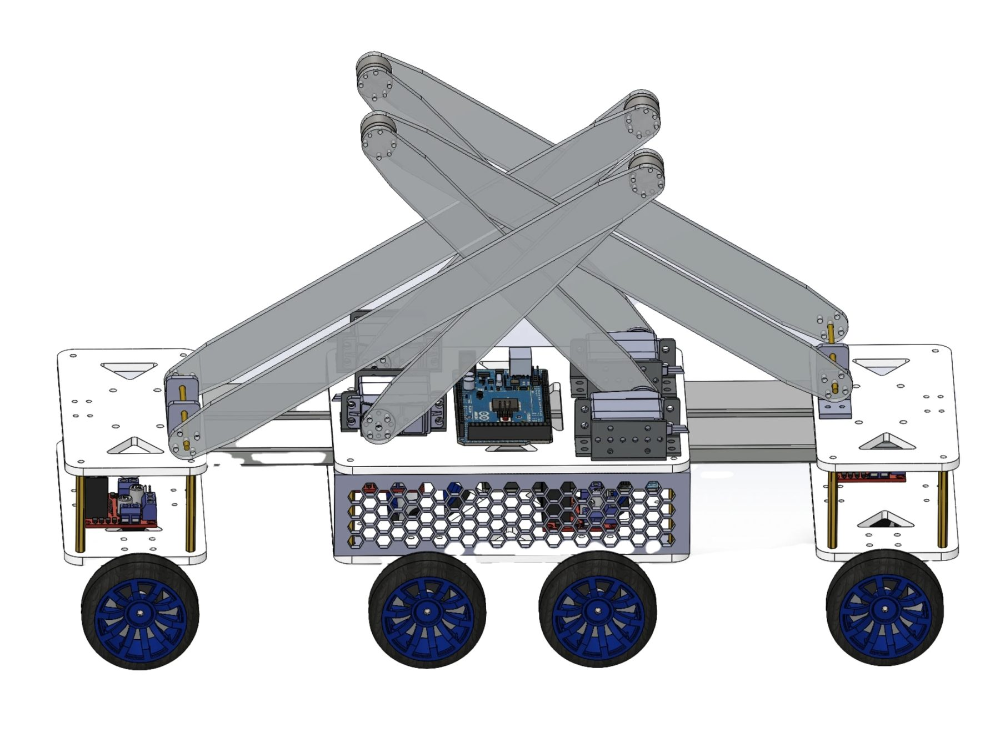
Linkage arms, laser-cut from acrylic.
A servo at the base of each arm.
End module. It rides out on a drawer slide.
Arduino on the deck, motor drivers on the deck below.
The CAD model, arms raised.
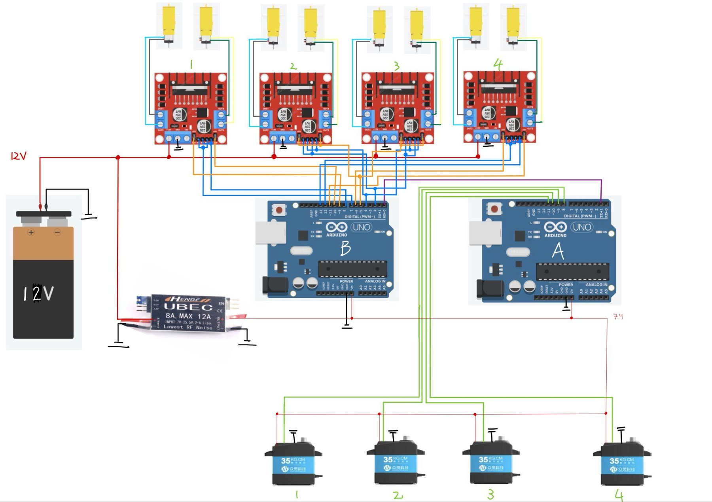
Four L298N drivers, two motors each.
Arduino B: listens for go or stop and drives all eight motors.
Arduino A: runs the servo sequence and decides when to go.
Regulator steps the 12 V battery down for the servos.
Green lines: servo signals from Arduino A. A single serial line links the two boards.
The wiring, as built.
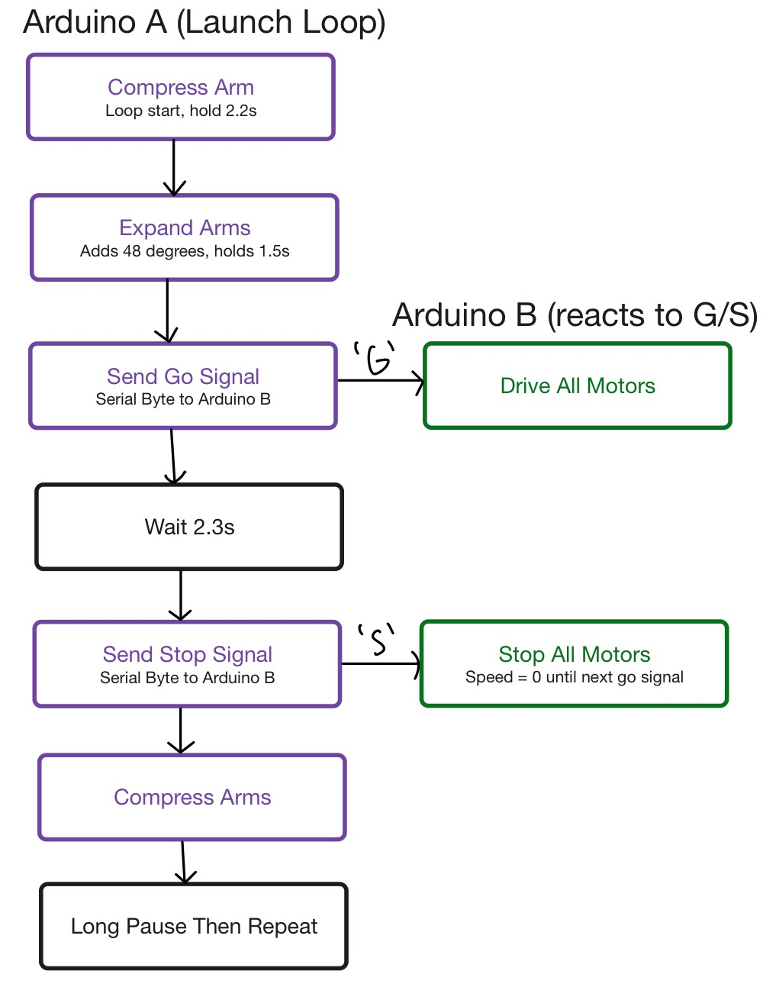
The crossing sequence. The left column is the arm controller, the right is the motor controller.
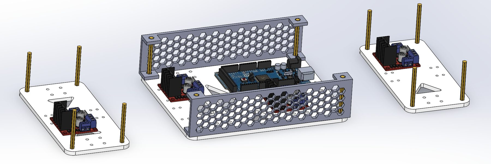
Chassis plates, exploded.
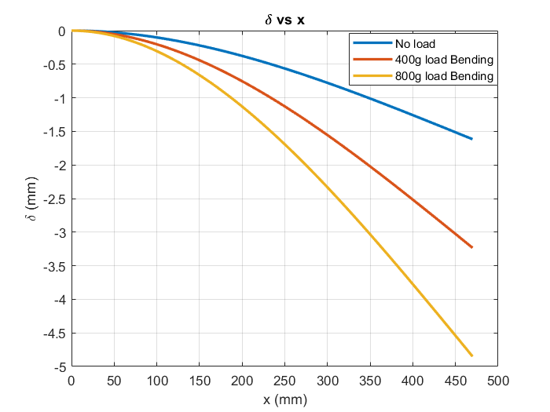
The team's bending estimate for the extended slide: more load, more droop at the tip.
When
January to April 2026
Where
ENGR 100, University of Michigan
Team
Five students, run as a small company with a client
My part
Driving simulator, controller firmware, final design presentation to the client
Built with
Python, PyBullet, OpenCV, Arduino C++, nRF24 radio, Wokwi, 3D printing
A PVC-frame inspection vehicle designed and built by a team of five. I wrote a driving simulator for the team and worked on the firmware for the handheld radio controller, including a simulated radio so the code could be tested before the hardware existed.
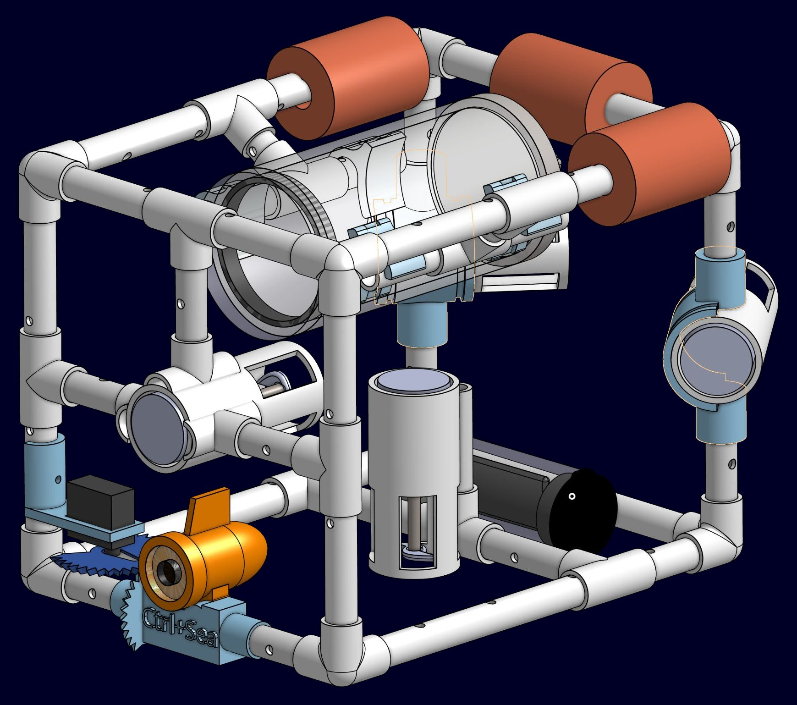
Pool-noodle flotation, high on the frame.
Electronics canister.
Horizontal thrusters. The rear pair is angled 45° for yaw.
One vertical thruster for heave.
Camera, tilted by a servo through printed bevel gears.
Battery canister, low and aft, to keep the centre of gravity under the centre of buoyancy.
The design the team took to its detailed design review, February 2026.
Client requirements against the design
Requirement
Asked for
Design review value
Mass
under 8 kg
about 5.5 kg in CAD
Size
fits 46 × 32 × 32 cm
frame about 41 × 30 × 30 cm
Buoyancy
slightly positive
displaces about 5.9 L
Motion
all directions, hold on target
3 horizontal thrusters, 1 vertical, tilting camera
Speed
not specified
predicted 0.4 m/s forward, 0.25 m/s vertical
Cost
course budget
$328 planned, two thirds of it motors
The brief
The client scenario was inspecting the risers of offshore wind turbines. The vehicle had to move in every direction, stay slightly buoyant, and hold its camera on the inspection site.
The numbers in this table are the team's predictions from CAD and a drag balance, made before the build. They are not pool measurements.
The simulator
I built a physics simulator in Python that loads the team's CAD assembly and is driven from an on-screen copy of the real controller: left stick for surge and yaw, right stick for camera tilt, two buttons for heave. It shows the camera view and an attitude indicator, and it can record a run. It let the team try the controls before the vehicle was built.
The controller panel runs as its own process and talks to the physics loop through shared memory, because the physics engine's window needs the main thread to itself.
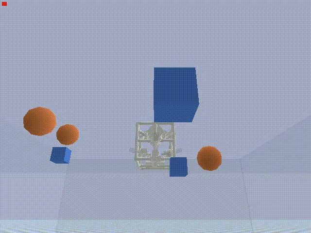
The simulator's pool, with targets to drive around.
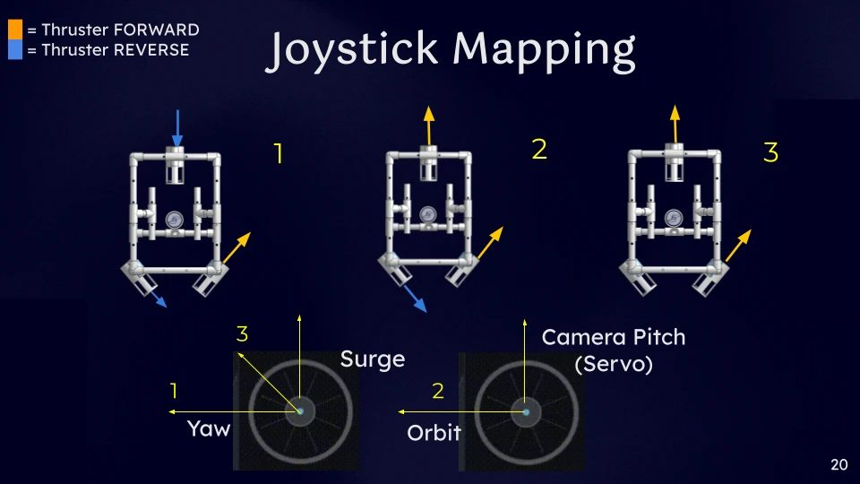
How stick positions map to thrusters, from the team's design review.
The controller firmware
The handheld controller is an Arduino Nano with two joysticks, an LCD and an nRF24 radio. It sends thruster and servo commands, and the vehicle's telemetry rides back in the radio's acknowledgement packet. The controller shows that telemetry on the LCD and logs it to an SD card once a second.
To test without hardware, I wrote custom chips in C for the Wokwi circuit simulator that behave like the radio's SPI registers, and a Python bridge with unit tests that rebuilds pin states from serial output.
What went wrong
The radio link took the most debugging. The repository still holds the retry and fallback builds from the final week.
When
February to April 2026
Where
Oldham Lab, University of Michigan. Advisor: Prof. Kenn Oldham
Program
Undergraduate research through UROP and MRADS
My part
Wrote the tracking software, ran actuator tests, presented a poster at the 2026 MRADS Research Symposium
Built with
MATLAB, Computer Vision Toolbox, FFmpeg
Microrobot motion tracking
A MATLAB tool that follows the tip of a bending microrobot actuator through microscope and 250 frames-per-second video, and reports its angle and travel in microns. On a 1,592-frame run it held the tip on every frame.
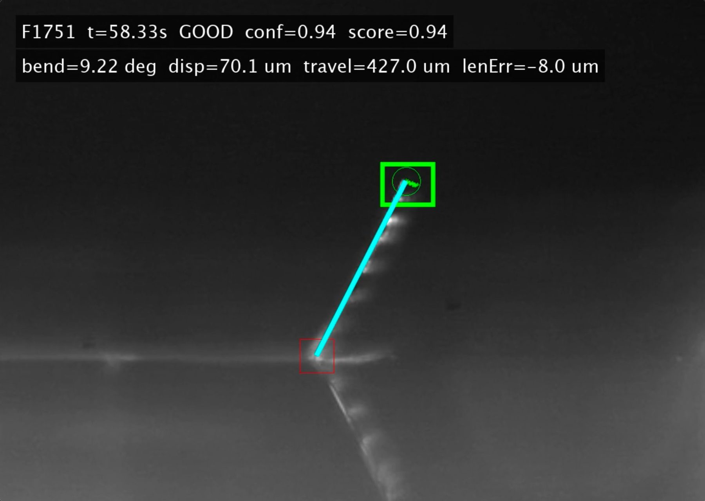
Base of the actuator. Fixed reference.
Tip. This is the point being tracked.
Beam line. Its length should not change, so a sudden change means a bad match.
Per-frame readout: status, confidence, bend angle and displacement in microns.
One frame of tracker output, as shown on my symposium poster.
The problem
The lab's actuators are thin films that curl when driven electrically. In the footage the tip is a faint streak with almost no texture, so general-purpose point trackers lose it.
What I built
The tracker blends template matching with optical flow, predicts where the tip should be next from its recent motion, and checks every match against physics: the beam cannot change length and the tip cannot jump. A match that fails is rejected and the tracker re-keys itself. The pixel scale comes from clicking two points a known distance apart.
For every frame it writes bend angle, tip displacement and speed to a CSV, and it renders an annotated video and a summary plot.
Nine seconds of tracked footage. The film is dim, which is the point.
Result
On one run of 1,592 frames the tracker kept the tip on every frame, 209 of them by recovering after a weak match, with a mean match confidence of 0.96. On a small-signal run it resolved tip motion of a few tens of microns. It took ten versions to get from a tracker that needed manual correction to one that runs unattended.
Results about the actuators themselves belong to the lab, so this page shows only the measurement tool.
When
June 2026 to now
Where
Personal project
Team
Just me, with AI coding agents that I direct
Status
Enclosure CAD and four circuit boards designed and checked. Not assembled yet.
Built with
Fusion 360, KiCad, Teensy 4.1, ESP32-S3, Python
DJ controller
A full-size, four-channel DJ controller that I am designing from the enclosure down to the circuit boards. Reworking the hub board's ground return cut its voltage drop from about 1,000 mV to 12 mV.
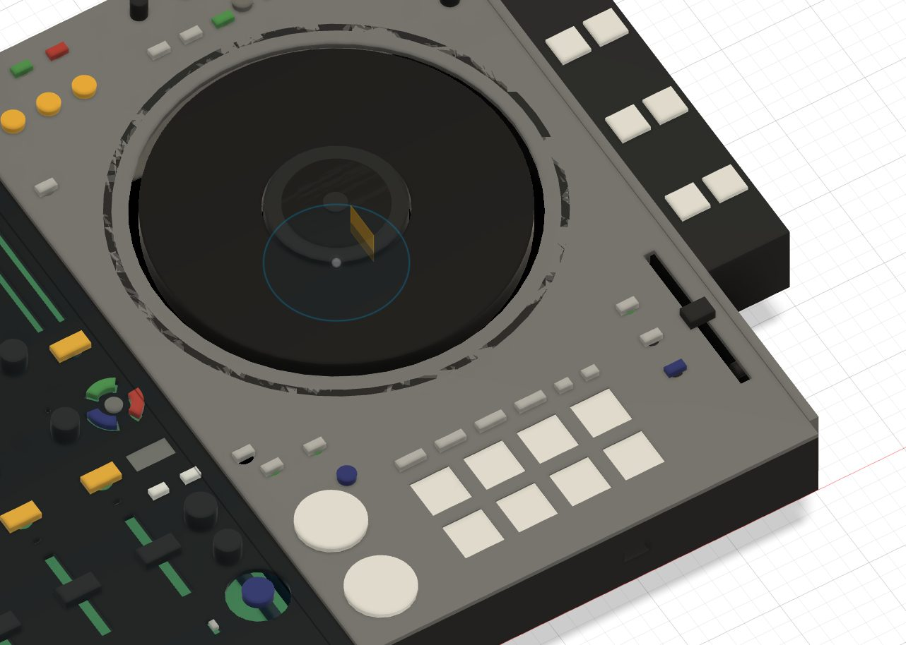
Jog wheel. A magnetic encoder reads rotation and a capacitive sensor reads touch.
Performance pads, lit by addressable LEDs.
Pitch fader.
Mixer module. It detaches from the two decks.
One deck in Fusion 360. The model is parametric, so circuit board outlines follow the button positions.
Mechanical
The controller is 680 × 390 mm and splits into three modules, two decks and a mixer. Board envelopes are taken from the CAD, so moving a button moves its footprint on the board.
Electrical
Four boards. A Teensy 4.1 in the hub speaks USB-MIDI to the laptop, and an ESP32-S3 in each deck scans its controls and reports over UART. Buttons go through I2C expanders, faders through analog multiplexers, and about 94 addressable LEDs light the pads and jog rings.
How I checked it
The hub board passes design-rule checks against the fabricator's limits with zero errors, and the other boards go through the same checks. I ran current-capacity and voltage-drop analysis on the power nets, which is what exposed the ground return on the hub board. I also checked every connector against every other for what happens if a cable is plugged into the wrong one.
Working with AI agents
Much of the board scripting and checking was done by AI coding agents working through KiCad and Fusion 360 tool bridges. I set the architecture and the pass criteria, and I review what comes back before it is kept.
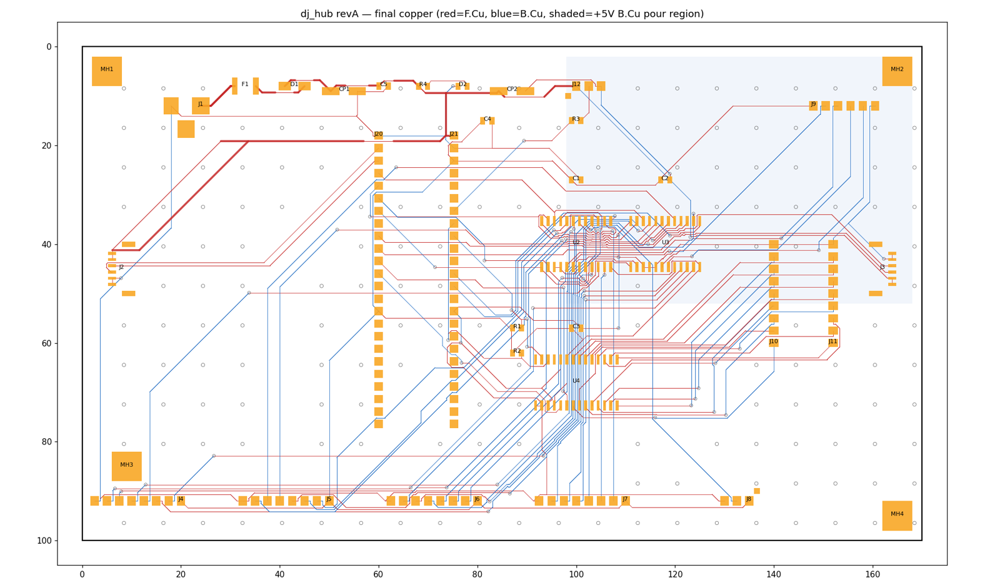
Hub board copper, front layer in red and back layer in blue, from the final review.
When
May to June 2026
Where
2026 China-U.S. Young Maker Competition, Shanghai Division
Result
Second Prize
Field
205 teams from 57 universities entered the division. 60 reached the in-person final.
My part
Delivered the team's pitch to the judges
GridNode competition pitch
Our team won Second Prize in the Shanghai Division of the 2026 China-U.S. Young Maker Competition. I was the one who stood up and pitched it to the judges.
The idea in one sketch. It is an illustration, not measured data.
The idea
Fast-charging stations for electric cars are wired for peak demand and sit mostly idle. GridNode puts a containerised, liquid-cooled computing node at the station to run batch AI jobs on that spare grid capacity. Its software forecasts the station's load and moves the computing out of the way before the chargers need the power.
What I did
I delivered the team's pitch, in English, to the judging panel.
Tools on local AI models
I run open models of up to 35 billion parameters on my own Mac with llama.cpp, MLX and LM Studio, and I build tools on top of them. I write these with AI coding agents. My part is the architecture, the test harness, and deciding what counts as working.
An autopilot that asks a local model for help
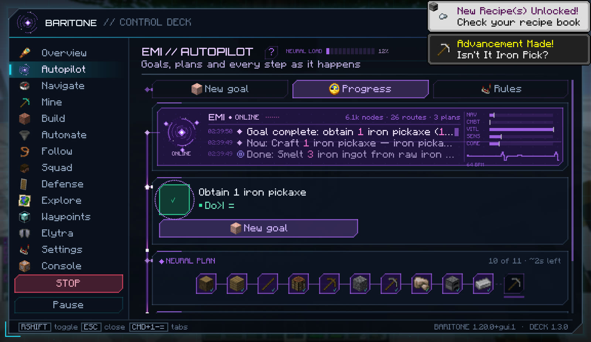
The autopilot's plan for one goal, every step verified.
A Minecraft mod, about 50,000 lines of Java, that wraps an open-source pathfinder in a planner. Give it a goal and it works out the steps from the game's own recipes, runs them, checks the inventory after each one, and re-plans when a step fails. When it is stuck it consults a model running on my Mac, which may only answer through a short list of typed, validated tools.
In a logged test on a fresh world it finished six queued goals in 22 minutes without dying.
A macOS app that runs two lasers, two party lights and two fog machines over a USB-DMX cable at about 40 updates a second, with chases synced to the beat. For fixtures with no manual, a vision model watches through the Mac's camera while the app sweeps each channel, and works out what the channel does.
It starts in blackout and keeps the lasers on safe frames until armed.
Swift, TypeScript, DMX512, LM Studio
Railhead
The macOS app I use to track this internship search. Logging real applications powers a pixel-art factory town.
SwiftUI, a command-line tool, a local agent that edits the data
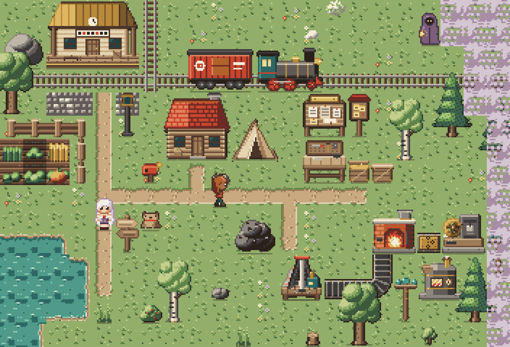
Railhead's town.
Teams, labs and teaching
Michigan Baja RacingSuspension subteam
Fall 2026 to now
Rebuilt CVT transmissions on several of the team's off-road cars and worked through how they are designed.
Modelled components for the landing pad subsystem in Siemens NX and Fusion 360.
Z LabUndergraduate research assistant
Sept 2025 to Jan 2026
Worked on a large robotics project with a team of more than 25: Fusion 360 CAD, 3D printing, C++, computer vision and electrical work on the robots.
Drone swarm classStudent teacher, Portland
2023 to 2025
Taught an accredited class in which students designed, built and flew a drone swarm from bare microcontrollers and INAV. Worked with FAA officials to get the waivers the swarm tests needed.
FIRST Robotics Team 2915Captain, design lead, CAD lead
2021 to 2025
Reworked how the team designs and prototypes, coached newer members in CAD and fabrication, and led a team on one robot subassembly.
University of MichiganMechanical Engineering, graduating May 2029
2025 to now
Michigan Research and Discovery Scholars. Dean's List and University Honors, Winter 2026. Coursework so far includes solid mechanics, design and manufacturing, differential equations, and electricity and magnetism.